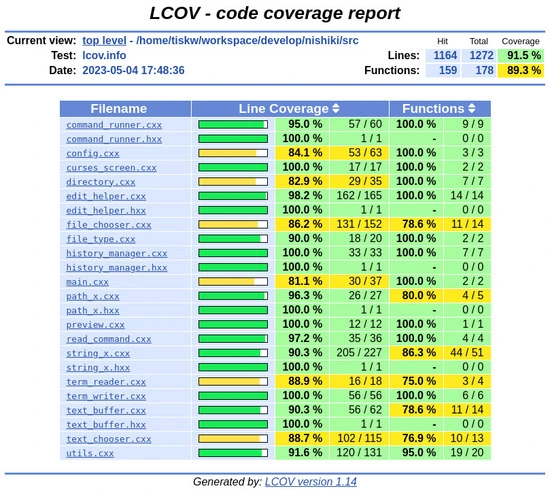

Our code provides a way to test NiShiKi and measure the coverage of the source code. In this section we will explain how to run a test and measure the code coverage.
Preparation
You need to install additional tools for running the test. Please run the following command.
# Install additional tools for test.
sudo apt install xdotool lcov
Test and coverage measurement
# Run the test.
make test
Please do not move window forcus from your terminal emulator while running the test. The above command automatically launch NiShiKi, type test commands and measure the code coverage.
Then, open test/lcov/index.html in your browser. You can see the code coverage information like the following.

How to Extend the Test
You can extend our test by modifying test/run_test.bash. Please open the bash file and add/modify the test code as you like.